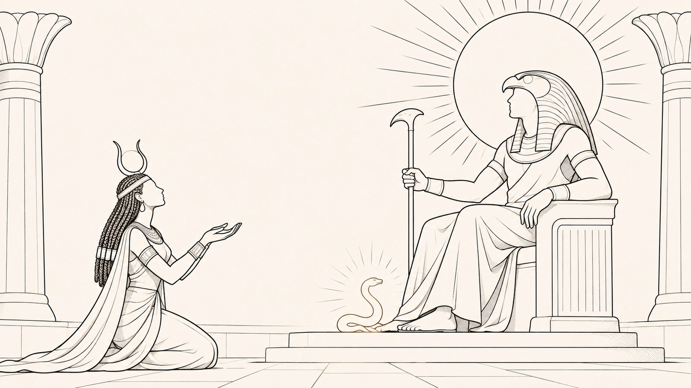

Path · Part 11 of 11
Why give all this a name?

Where it comes from
Isis produces the serpent from the substance of Ra himself and, with this, turns the excess of power into an instrument for manifesting its limit.p. 792
PT
Ísis produz a serpente a partir da substância do próprio Rá e, com isso, transforma o excesso de poder em instrumento de manifestação de seu limite.
It all began with a simple question, whether the skin is yours. Along the way, a kind of consumption appeared in which you imagine you are standing on your own ground, but you are only walking on borrowed ground, which can be taken away and remade at any moment.
On this ground, access, permanence and even the meaning of what you bought depend on an administration that never stops. And this administration does not present itself as someone's management. It presents itself as technical normality, as the way things are.
Where it comes from
The crossing carried out in this work began with the observation that there is a kind of consumption in which the subject imagines being on their own ground, but only moves within a granted, revocable and reconfigurable ground.p. 791
PT
A travessia realizada neste trabalho começou pela constatação de que existe um tipo de consumo em que o sujeito imagina estar em terreno próprio, mas só se move dentro de um chão concedido, revogável e reconfigurável.
Access, permanence and even the meaning of what was acquired depend on a continuous administration that does not present itself as management, but as technical normality.p. 21
PT
O acesso, a permanência e até o sentido do que foi adquirido dependem de uma administração contínua que não se apresenta como gestão, mas como normalidade técnica.
The way out is not to tear everything down. That would be like wanting to put out the sun to get rid of the shadow. It is not about freezing the services or pretending they are simple.
The goal is different, more modest and firmer. It is to tame the inequality without destroying the structure, with clear criteria. It is to contain instead of demolish.
Where it comes from
Charting a way forward, however, does not mean seeking a heroic gesture of demolition, as if it were desirable to put out the sun to solve the problem of the shadow. Charting a way forward means proposing criteria capable of taming the asymmetry without destroying the infrastructure.p. 791
PT
Encaminhar, porém, não significa buscar um gesto heroico de demolição, como se fosse desejável apagar o sol para resolver o problema da sombra. Encaminhar significa propor critérios capazes de domesticar a assimetria sem destruir a infraestrutura.
It is in this sense that the proposed protection is organized as an ethics of containment, not as an ethics of demolition.p. 793
PT
É nesse sentido que a tutela proposta se organiza como ética de contenção, não como ética de demolição.
Not to freeze the service, nor to deny the complexity of the environmentp. 755
PT
Não para congelar o serviço, nem para negar a complexidade do ambiente
What does the myth of Isis and Ra teach about naming?
An Egyptian myth helps make this clear. Ra, the Sun god, reigned over all, but he was not invulnerable. Isis did not want to destroy the Sun. She only wanted him to acknowledge that he was not absolute.
With a serpent made of Ra's own substance, she poisoned him. In exchange for the cure, she asked for a single thing, the secret name he kept to himself. And the effect was decisive. Once named, power stops being pure presence, which is simply there, and becomes something that can be called upon, delimited and made to answer for what it does.
Where it comes from
Ra reigns over all, but he is not invulnerable.p. 792
PT
Rá reina sobre todos, mas não é invulnerável.
At the same time, Isis does not wish to annihilate the sun.p. 792
PT
Ao mesmo tempo, Ísis não deseja aniquilar o sol.
Her interest is to force the sun to acknowledge that it is not absolute.p. 792
PT
Seu interesse é forçar o sol a reconhecer que não é absoluto.
Passage already quoted abovep. 792
In exchange for the cure, Isis demands only that Ra reveal to her the name he keeps to himself.p. 792
PT
Em troca da cura, Ísis exige apenas que Rá revele a ela o nome que guarda para si.
Once named, power ceases to operate as pure natural presence and becomes invocable, delimitable and, therefore, obliged to answer for its acts.p. 792
PT
Uma vez nomeado, o poder deixa de operar como pura presença natural e passa a ser invocável, delimitável e, portanto, obrigado a responder por seus atos.
That is what the names along this path do. As long as the platform can say that it merely works, merely updates and merely applies rules, the discussion stays trapped in the language of the inevitable, and nobody sues the rain.
When it is shown that access, permanence, visibility, reputation and use are organized by design and by punishment, what looked like weather looks like a decision again. And what looks like a decision again can be controlled.
Where it comes from
As long as the platform can say that it merely works, merely updates, merely executes, merely applies rules, the conflict will remain trapped in the idiom of the inevitable.p. 792
PT
Enquanto a plataforma puder dizer que apenas funciona, apenas atualiza, apenas executa, apenas aplica regras, o conflito permanecerá preso ao idioma do inevitável.
what previously looked like weather looks like a decision again. And what looks like a decision again can be controlled.p. 793
PT
o que antes parecia clima volta a parecer decisão. E o que volta a parecer decisão pode ser controlado.
What Brazilian consumer law lacks in the face of the law of the platform is not indignation or the rhetoric of denunciation. It lacks the vocabulary to show and prove decisions that today pass for the mere functioning of the system.
Naming, here, is not writing poetry. It is taking power out of the place of the obvious, where nobody questions it, and bringing it to the place of what can be contested. That is why this path gave a name to each thing you may already have felt without knowing how to say it.
Where it comes from
What Consumer Law lacks in the face of the Lex Plataformae is not moral indignation, nor a rhetorical repertoire of denunciation. It lacks the vocabulary to make demonstrable those decisions that today pass for the mere functioning of the system.p. 792
PT
O que falta ao Direito do Consumidor diante da Lex Plataformae não é indignação moral, nem tampouco repertório retórico de denúncia. Falta-lhe vocabulário para tornar demonstráveis decisões que hoje se passam por mero funcionamento do sistema.
Naming is not poeticizing. Naming is shifting power from a regime of self-evidence to a regime of contestability.p. 792
PT
Nomear não é poetizar. Nomear é deslocar o poder de um regime de autoevidência para um regime de contestabilidade.
What can you demand?
And what would you ask about your skin now?